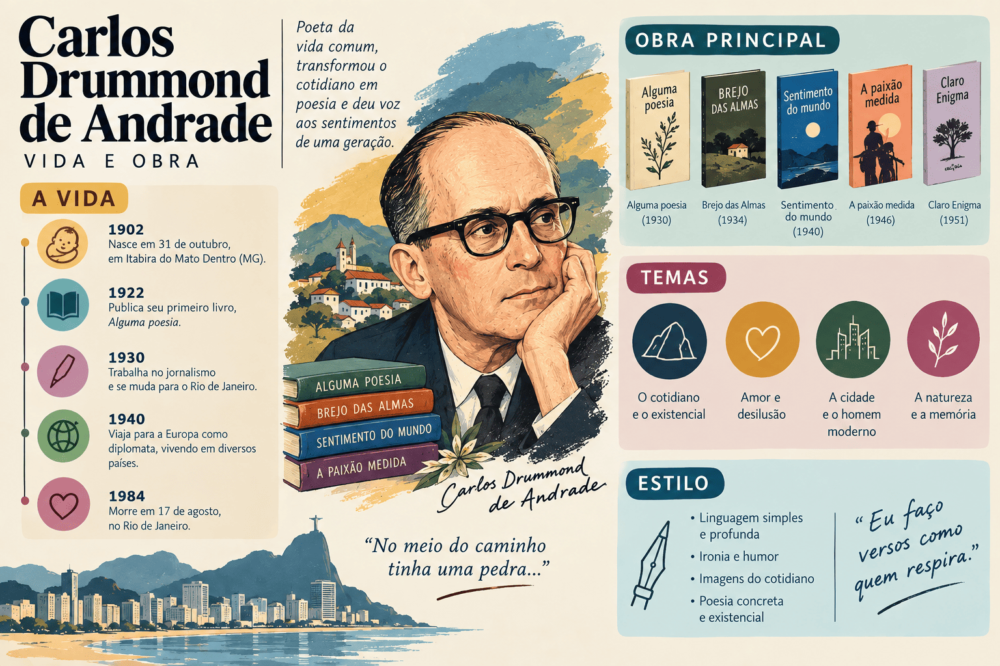

Carlos Drummond de Andrade: vida, obras e fases poéticas
Carlos Drummond de Andrade é considerado por grande parte da crítica o maior poeta da literatura brasileira e uma das vozes líricas mais expressivas do século XX. Autor de clássicos como Alguma Poesia, Sentimento do Mundo, A Rosa do Povo e Claro Enigma, construiu uma obra multifacetada que abrange desde a ironia cotidiana e o humor desarmante até a dor coletiva das guerras, o engajamento social e a profunda meditação metafísica sobre o tempo e a memória.
Figura central da Segunda Geração do Modernismo brasileiro (a Geração de 30), Drummond sintetizou as conquistas formais da Semana de 1922 com um rigor estético e reflexivo inigualável. Pela riqueza de sua linguagem e pela contundência com que abordou a condição humana, Drummond é historicamente o autor com o maior número de questões e citações no ENEM e nos principais vestibulares do país.

Carlos Drummond de Andrade em resumo:
- Nome completo: Carlos Drummond de Andrade;
- Nascimento: 31 de outubro de 1902, em Itabira, Minas Gerais;
- Falecimento: 17 de agosto de 1987, no Rio de Janeiro;
- Atuação: poeta, cronista, jornalista, tradutor e funcionário público;
- Período literário: Segunda Geração Modernista (Geração de 30);
- Principais obras poéticas: Alguma Poesia (1930), Sentimento do Mundo (1940), A Rosa do Povo (1945) e Claro Enigma (1951);
- Fases centrais: Fase Irônica/Individual (do "Eu"), Fase Social (do "Nós") e Fase Filosófica/Metafísica (do "Mundo");
- Temas centrais: o sentimento "gauche" de inadequação, a solidariedade e a dor política, o amor, a memória de Itabira, a morte e o tempo;
- Estilo: domínio do verso livre e do soneto clássico, coloquialismo poético, humor amargo, síntese vocabular e metalinguagem contínua.
Quem foi Carlos Drummond de Andrade?
Carlos Drummond de Andrade nasceu em 31 de outubro de 1902 em Itabira do Mato Dentro, no interior de Minas Gerais, descendente de tradicionais famílias de proprietários de terras e mineradores. A paisagem de Itabira — marcada pelo ferro, pelas montanhas escavadas e pela pacatez provinciana — converteu-se em matriz afetiva e poética presente em toda a sua trajetória.
Iniciou os estudos em Belo Horizonte e no Colégio Anchieta, em Nova Friburgo (RJ), de onde foi expulso após um desentendimento com um professor jesuíta por motivos de disciplina literária. Em 1925, formou-se em Farmácia pela Universidade Federal de Minas Gerais (UFMG), profissão que nunca exerceu, pois já havia escolhido as letras e a imprensa como vocação definitiva.
Em Belo Horizonte, integrou o grupo de jovens intelectuais que recepcionaram as ideias modernistas e fundou, ao lado de amigos como Pedro Nava e Emílio Moura, A Revista (1925), órgão de divulgação do Modernismo em Minas. Em 1928, publicou na Revista de Antropofagia de São Paulo o poema "No meio do caminho". O texto causou um dos maiores escândalos da história da imprensa cultural brasileira, dividindo a opinião pública entre zombarias acadêmicas e entusiasmo vanguardista.
Em 1934, mudou-se para o Rio de Janeiro para atuar como chefe de gabinete de Gustavo Capanema, ministro da Educação e Saúde Pública da Era Vargas, cargo que ocupou por mais de uma década. Atuou também no Serviço do Patrimônio Histórico e Artístico Nacional (SPHAN, atual Iphan) até se aposentar em 1962. Paralelamente, consolidou-se como um dos maiores cronistas dos jornais Correio da Manhã e Jornal do Brasil.
Faleceu em 17 de agosto de 1987, aos 84 anos, apenas doze dias após a morte de sua única filha, a escritora Maria Julieta Drummond de Andrade, fato que abalou irremediavelmente sua saúde emocional.
Linha do tempo de Carlos Drummond de Andrade
| Ano | Acontecimento |
|---|---|
| 1902 | Nasce em Itabira, no estado de Minas Gerais. |
| 1925 | Forma-se em Farmácia em Belo Horizonte e ajuda a fundar A Revista. |
| 1928 | Publica o célebre poema "No meio do caminho" na Revista de Antropofagia. |
| 1930 | Publica seu livro de estreia, Alguma Poesia, que abre com o "Poema de Sete Faces". |
| 1934 | Publica Brejo das Almas e transfere-se para o Rio de Janeiro como chefe de gabinete do MEC. |
| 1940 | Lança Sentimento do Mundo, marco de sua poesia engajada diante da Segunda Guerra Mundial. |
| 1942 | Publica José, trazendo poemas emblemáticos como o famoso poema homônimo ("E agora, José?"). |
| 1945 | Lança A Rosa do Povo, obra-prima da poesia social brasileira. |
| 1951 | Publica Claro Enigma, inaugurando sua fase filosófica e o retorno ao rigor formal do soneto. |
| 1962 | Aposenta-se do serviço público e publica Antologia Poética e Lição de Coisas. |
| 1971–1973 | Inicia sua vertente poética memorialística com Boitempo e Menino Antigo. |
| 1987 | Falece no Rio de Janeiro em 17 de agosto, poucos dias após a morte de sua filha. |
Carlos Drummond de Andrade e a Segunda Geração Modernista
Carlos Drummond de Andrade pertence à Segunda Geração do Modernismo brasileiro (1930–1945). A Primeira Geração (Fase Heroica de 1922) teve papel iconoclasta, destruindo regras acadêmicas, zombando do passado e afirmando a liberdade temática e o verso livre. A Geração de 30 herdou essas liberdades, mas promoveu o amadurecimento formal, a reflexão ética e o aprofundamento ideológico.
O contexto de 1930 foi marcado por graves comoções globais e nacionais: a Grande Depressão de 1929, a Revolução de 1930 e a ditadura do Estado Novo no Brasil, a ascensão do nazi-fascismo e os horrores da Segunda Guerra Mundial. Diante desse cenário de crise, a poesia de Drummond abandonou o simples deboche para assumir a responsabilidade histórica de testemunhar o sofrimento do homem contemporâneo.
“O poeta declina de toda arte que não seja a de testemunhar a aventura do homem sobre a terra.” — Carlos Drummond de Andrade
As fases poéticas de Carlos Drummond de Andrade
A crítica literária brasileira costuma organizar a extensa produção de Drummond em três grandes momentos fundamentais, acompanhados de uma fase memorialística em sua maturidade:
1. Fase Irônica ou do "Eu" (Fase Gauche: 1930–1934)
Compreende as obras Alguma Poesia (1930) e Brejo das Almas (1934). O poeta foca no indivíduo deslocado, no isolamento provinciano e no sentimento de inadequação social. A palavra-chave é gauche (expressão francesa que significa "torto", "desajeitado"), consagrada logo na abertura do "Poema de Sete Faces":
“Quando nasci, um anjo torto / desses que vivem na sombra / disse: Vai, Carlos! ser gauche na vida.”
O tom predominante é o humor irônico, o desencanto amoroso, o ceticismo em relação aos valores burgueses e o uso do poema-piada herdado de 1922, porém com maior profundidade reflexiva.
2. Fase Social ou do "Nós" (1935–1945)
Compreende as obras Sentimento do Mundo (1940), José (1942) e o clássico A Rosa do Povo (1945). O poeta sai do isolamento intimista e estende as mãos aos seus semelhantes diante dos horrores da guerra e da opressão das ditaduras.
A poesia torna-se combativa, empática e solidária. Poemas antológicos como "Mãos Dadas", "A Flor e a Náusea", "Nosso Tempo" e "O Elefante" expressam a angústia da coletividade e a recusa da indiferença, postulando uma arte comprometida com o presente histórico.
3. Fase Filosófica / Metafísica ou do "Mundo" (1951 em diante)
Inaugurada com o clássico Claro Enigma (1951) e continuada em obras como Fazendeiro do Ar (1954) e A Vida Passada a Limpo (1959). Após o término da guerra e as desilusões com os projetos políticos utópicos, o poeta assume uma postura de ceticismo existencial, desengano e maturidade filosófica.
Ocorre um retorno notável ao rigor métrico, à rima e ao cultivo do soneto. Os temas centrais passam a ser a passagem inexorável do tempo, a morte, o enigma da criação, a perda dos entes queridos e a consciência do nada.
4. Fase Memorialística (Anos 1970 e 1980)
Marcada por livros como Boitempo (1971), Menino Antigo (1973) e Esquecer para Lembrar (1979). Drummond recria em versos suas lembranças de infância, a genealogia familiar, as figuras populares de Itabira e os costumes patriarcais de Minas Gerais, operando uma arqueologia afetiva do passado.
Principais obras de Carlos Drummond de Andrade
1. Alguma Poesia (1930)
Livro de estreia financiado pelo próprio autor. Reúne 49 poemas que dialogam com a herança da Semana de Arte Moderna, apresentando versos curtos, linguagem coloquial e flagrantes da vida cotidiana. Contém poemas imortais como "Poema de Sete Faces", "Quadrilha", "No meio do caminho" e "Infância".
2. Sentimento do Mundo (1940)
Composto sob a sombra da Segunda Guerra Mundial e da ditadura do Estado Novo. O individualismo cede espaço ao sofrimento coletivo. Em "Mãos Dadas", o poeta sintetiza a postura ética dessa fase: "O tempo é a minha matéria, o tempo presente, os homens presentes, a vida presente."
3. A Rosa do Povo (1945)
A mais ampla e contundente coletânea de poesia engajada e social da literatura brasileira. Dividido em 55 poemas longos, o livro registra o ápice da indignação política e humanitária de Drummond. Em "A Flor e a Náusea", a flor frágil que nasce furando o asfalto imundo torna-se a imagem suprema da esperança teimosa em tempos de barbárie.
4. Claro Enigma (1951)
Obra-prima de sua fase clássica e meditativa. O título oxímoro (a união de conceitos opostos: a clareza e o enigma) expressa a tentativa da inteligência lúcida de decifrar o mistério impenetrável da vida. O ápice do livro é o poema "A Máquina do Mundo", no qual o universo oferece seus segredos a um caminhante mineiro que, desiludido, recusa a revelação e segue sua marcha de cabeça baixa.
Principais temas da poesia drummondiana
- O indivíduo deslocado (o sujeito gauche): a sensação perene de desajuste com o mundo e a autocrítica irônica;
- O engajamento social e o testemunho histórico: a dor perante as injustiças econômicas, as guerras mundiais e as tiranias políticas;
- O amor e suas contradições: o amor lírico, o desejo carnal e o desencontro afetivo (exemplificado magistralmente em "Quadrilha");
- A memória e a herança de Itabira: a evocação do passado provinciano, da família patriarcal e do minério de ferro;
- A tirania do tempo e o envelhecimento: a constatação da transitoriedade das coisas e a decadência do corpo físico;
- A metalinguagem e a luta com as palavras: a consciência dos limites da linguagem expressa na labuta árdua de esculpir o verso;
- A reflexão metafísica e a morte: a perplexidade diante do fim último da existência humana e o vazio existencial.
Características literárias de Carlos Drummond de Andrade
A ironia e o humor crítico
A ironia drummondiana não é mera chacota passageira: é um instrumento crítico e de defesa existencial. O poeta desmascara o sentimentalismo ingênuo, a hipocrisia das convenções sociais e a ilusão de grandiosidade dos indivíduos com um sorriso amargo e lúcido.
Versatilidade formal: do verso livre ao soneto
Drummond demonstrou pleno domínio de todos os recursos da métrica poética. Usou com maestria o verso livre, as rimas toantes e o poema em prosa nos livros de combate social, e recuperou o rigor estrito do soneto decassílabo e da métrica clássica em obras de maturidade como Claro Enigma.
A metapoesia constante
Escrever poemas é tema permanente da própria poesia de Drummond. Em poemas como "Procura da Poesia" e "Oficina Irritada", ele aconselha o escritor a não cantar sua vida pessoal nem derramar lágrimas superficiais, mas lutar corpo a corpo com a palavra no silêncio da mesa de trabalho.
Coloquialismo e clareza sintática
Mesmo nas reflexões filosóficas mais complexas, Drummond recusa o rebuscamento inútil. Sua poesia preserva a naturalidade do falar brasileiro, a agudeza da síntese e o poder de transformar frases cotidianas em versos inesquecíveis.
Conteúdos relacionados
Explore Outros Conteúdos
Continue seus estudos acessando outras seções do site Mestre Kira: